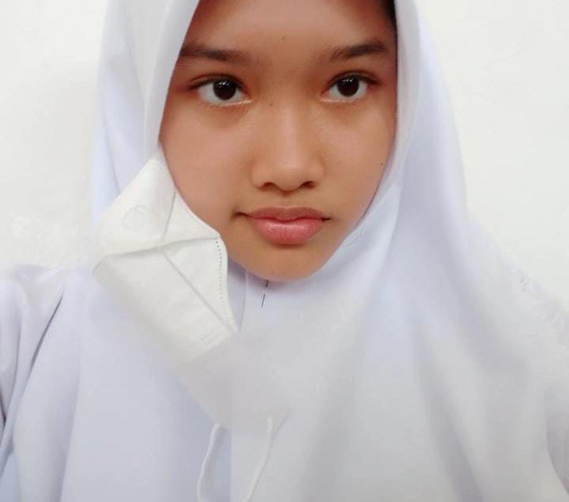

Better
health
days
lives
Selamat datang di website RUMAH SAKIT HARAPAN, selamat mendapat informasi mengenai pendaftaran nomer antrian, daftar dokter, konsultasi melalui online, dan informasi lainnya
012-223-3121
Informasi Rumah Sakit Harapan
Untuk melakukan pengecekan atau konsultasi rutin harus mendaftar secara online minimal satu hari sebelum melakukan hari pengecekan. Kemudian saat tiba diruumah sakit anda hanya perlu mengscan qr qode yang sudah diberikan via WhatsApp saat perndaftaran online berlangsung.
Untuk informasi lebih lanjut scroll sampai merasa informasi yang anda butuhkan akurat, jangan lupa melakukan pendaftaran untuk tindak lanjut ke Rumah Sakit Harapan.
12 Poliklinik
yang tersedia


Our Timeline
Mengadakan Vaksin Gratis
Setiap 2 minggu sekali, dirumah sakit ini menyelenggarakan vaksinasi gratis campak dan rubella untuk bayi sampai anak anak max. 11 tahun.
Konsultasi Secara Rutin
Perlu diketahui untuk konsultasi ke poliklinik anda dapat datang sesuai jadwal yang berlaku.
Seputar IGD & Poliklinik Umum
Untuk IGD dengan poliklinik umum buka 24 Jam, dengan tenaga kesehatan yang bertugas.
Seputar COVID-19
Bagi penderita atau orang yang ingin mengetahui tentang covid-19 kami menyediakan ruangann isolasi untuk pasien rawat inap.
Dan menyediakan swab test dengan jadwal yang disediakan.
Magang/Praktik kerja lapangan
Kami juga menyediakan pelaksanaan magang atau PKL bagi mahasiswa/i dan siswa/i
Our Polyclinic
POLIKLINIK UMUM
Jenis layanan dirumah sakit yang memberikan pelayanan kedokteran berupa pemeriksaan kesehatan, pengobatan dan penyuluhan kepada pasien atau masyarakat, serta meningkatkan pengetahuan dan kesadaran masyarakat dalam bidang kesehatan.
POLIKLINIK ANAK
Jenis layanan kesehatan khusus untuk pasien anak-anak, mulai dari bayi hingga remaja. Untuk memberikan perawatan, diagnosis, dan pengobatan untuk masalah kesehatan anak-anak, seperti penyakit umum dan masalah gizi.
POLIKLINIK PENYAKIT DALAM
poliklinik yang menyediakan layanan kesehatan untuk masalah kesehatan yang terkait dengan organ dalam tubuh manusia, seperti jantung, paru-paru, lambung, usus, hati, ginjal, dan sistem kekebalan tubuh.
POLIKLINIK BEDAH
Poli yang menangani pengobatan penyakit dan luka dengan menggunakan metode bedah (operatif).
POLIKLINIK GIGI DAN MULUT
Jenis pelayanan terhadap pasien atau pelanggan di Poli Gigi dan Mulut meliputi pasien dewasa dan anak-anak, yang dilaksanakan oleh dokter gigi, mulai pasien datang berobat sampai selesai.
POLIKLINIK THT-KL
Jenis layanan kesehatan untuk pasien yang mengalami gangguan pada organ-organ THT-KL, yaitu telinga, hidung, tenggorokan, kepala, dan leher.
POLIKLINIK BEDAH MULUT
Jenis pelayanan kesehatan gigi yang berkaitan dengan penanganan masalah gigi dan mulut yang memerlukan penanganan bedah.
POLIKLINIK SARAF
Jenis layanan pemeriksaan kondisi dan mendeteksi gangguan pada sistem saraf tubuh, serta mendiagnosis penyakit saraf yang mungkin diderita pasien, ditangani oleh dokter spesialis yang berpengalaman di bidangnya.
POLIKLINIK KEBIDANAN DAN KANDUNGAN
Jenis pelayanan pasien dengan kasus yang berhubungan dengan kehamilan dan penyakit kandungan serta didukung beberapa dokter spesialis kebidanan dan penyakit kandungan.
PILIKLINIK ORTHOPEDI
Jenis poliklinik yang menyediakan layanan kesehatan untuk masalah tulang, otot, dan sendi.
POLIKLNIK KULIT DAN KELAMIN
Jenis layanan kesehatan yang difokuskan pada diagnosis, perawatan, dan pengobatan gangguan kesehatan pada kulit dan kelamin.
POLIKLINIK GIZI
Jenis layanan kesehatan yang bertujuan untuk memberikan edukasi, evaluasi, dan pengobatan terkait asupan nutrisi dan pola makan yang sehat.